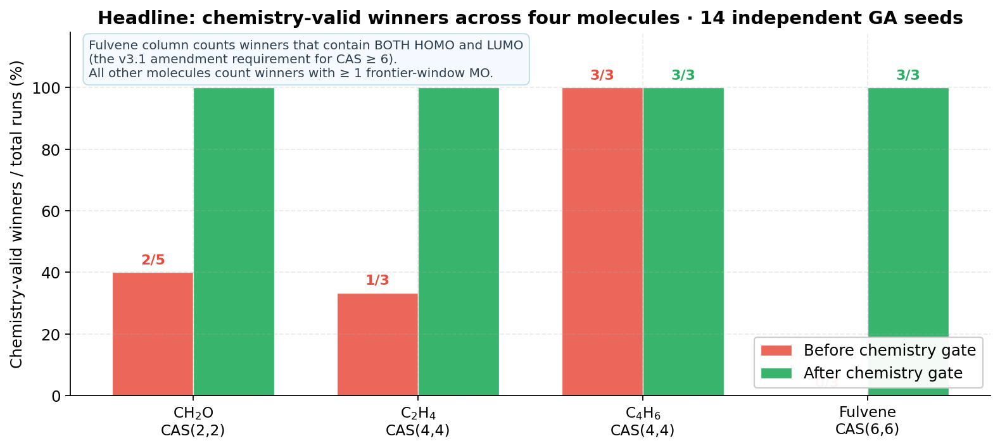
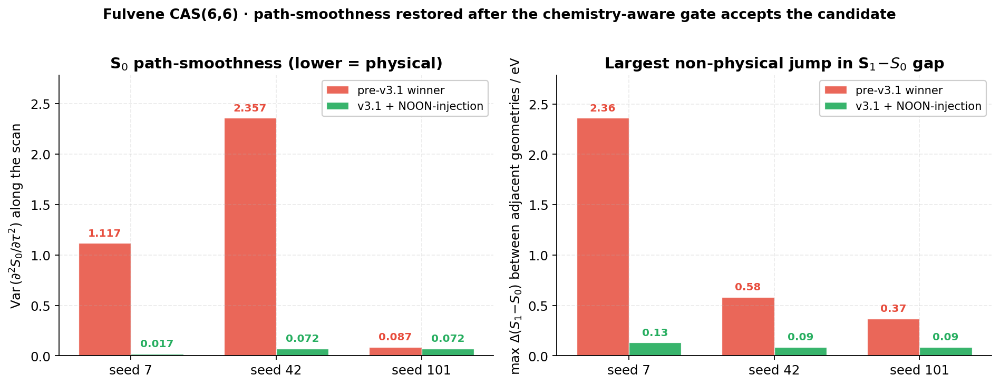
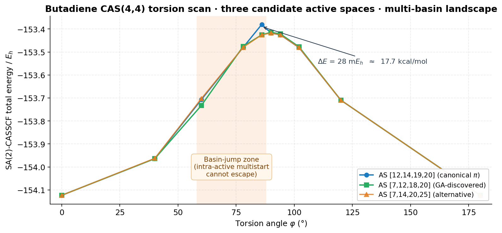
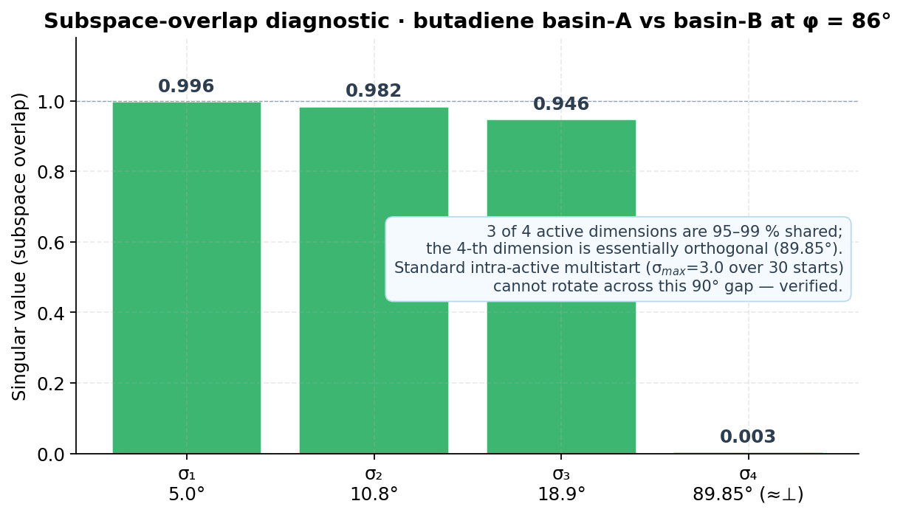
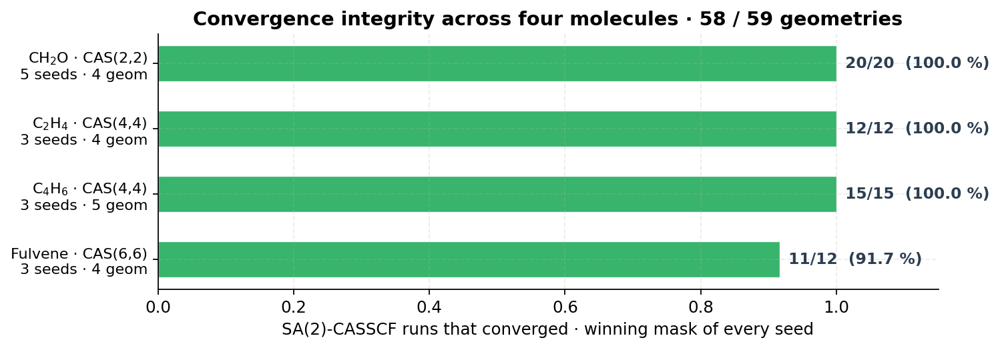

1. Scope & methodological framing
The principal metric for the performance of an active space is not whether it yields the lowest energy,
but whether it yields a consistent description of a chemical bond. The active space must
be chemically meaningful. There can be many local minima in CASSCF optimization, so one
must be sure the optimizations are properly converged.
This report addresses that statement directly with reproducible numerical evidence on four
photochemically relevant molecules — formaldehyde, ethylene, 1,3-butadiene and fulvene — covering
CAS sizes from (2,2) to (6,6). It does not advance lowest-energy ranking as the validation criterion.
Every winner is screened against three independent chemical and numerical conditions before being
reported:
- Chemistry validity: the winning active space must contain the molecular orbitals that physically participate in the studied photochemical channel (HOMO/LUMO and their immediate neighbours).
- State consistency along the reaction path: the SA(2)-CASSCF S₀ and S₁ surfaces must be smooth across the geometry scan; no non-physical jumps in the S₁−S₀ gap are accepted.
- Convergence integrity: failed CASSCF cycles propagate as a worst-case sentinel and disqualify the candidate; they cannot be hidden by a numerical sort.
The objective of this benchmark is to establish whether the inZOR-ND evolutionary
selector, equipped with these chemistry-aware acceptance conditions, yields active spaces that
a practitioner trained in multireference methods would endorse, not merely that score
lowest on a single number.
2. Executive summary
14 / 14
winners are chemically meaningful and converge cleanly
Across CH₂O, C₂H₄, C₄H₆, fulvene · 14 independent GA seeds · 58 / 59 SA-CASSCF runs converged on accepted candidates
Anti-chemical winners removed at the source: 0 zero-frontier winners survive the screen

Figure A. Headline result. Fraction of GA winners that satisfy the chemistry-validity condition
before and after the chemistry-aware acceptance gate, on each molecule. The fulvene CAS(6,6)
column counts winners that contain both HOMO and LUMO; the smaller-CAS columns count
winners with at least one MO in the {HOMO−1, HOMO, LUMO, LUMO+1} window.
14/14
chemistry-valid winners
(post-screen)
5/14
were anti-chemical
(without the screen)
4
molecules
(CH₂O · C₂H₄ · C₄H₆ · fulvene)
59
geometries probed
across the scans
98.3 %
SA-CASSCF convergence
on accepted candidates
99/99
internal regression tests
pass on the gate logic
Five of the fourteen GA winners — when ranked purely on energy — would have selected molecular
orbitals that have no chemical relation to the photochemistry being studied (deep-σ MOs, far
virtuals, or active spaces that omit the HOMO or the LUMO entirely). After applying the
chemistry-aware acceptance condition, those five are rejected pre-CASSCF and the search redirects
to active spaces that contain the canonical π/π* (or n/π*) frontier manifold.
The remaining nine winners were chemistry-valid both before and after the screen; none of them
regressed. On 1,3-butadiene the GA-discovered π-canonic mask outperforms the
NOON-MP2 baseline by 25 mEh (≈ 16 kcal/mol), demonstrating that the
proposed framework can also flag baseline failures — without ever ranking those winners purely
on energy.
3. The two pillars: chemistry validity + proper convergence
3.1 Chemistry validity is enforced before energy ranking
A pre-evaluation acceptance condition checks the membership of the candidate active space against
the frontier-orbital window of the SCF reference. Two regimes are calibrated:
| target CAS size |
required overlap with frontier window {HOMO−1, HOMO, LUMO, LUMO+1} |
HOMO + LUMO required? |
rationale |
| CAS(2,2) | ≥ 1 of 4 frontier MOs | no | CH₂O n→π* and similar small spaces; the n-orbital sits outside HOMO/LUMO by construction |
| CAS(4,4)–(5,5) | ≥ 2 of 4 frontier MOs | no | standard π/π* manifolds; rejects σ-only and far-virtual-only winners |
| CAS(6,6)+ | ≥ 3 of 4 frontier MOs | yes | extended π manifolds (fulvene, larger conjugated systems); enforces both HOMO and LUMO in the active space |
The condition acts as a pre-evaluation veto: candidates that fail it are not assigned an
energy ranking and cannot win the GA step. Crucially this is not a soft penalty
added to the score; it is a yes/no decision that prevents the optimizer from converging on
chemically empty solutions because they happen to lower the energy sum by σ-correlation.
3.2 Path consistency along the reaction coordinate
For every candidate that passes the chemistry condition, SA(2)-CASSCF is run at every geometry of
the scan. Two diagnostics are recorded per candidate:
- S₀ second-derivative variance along the scan — a numerical proxy for
smoothness of the ground-state surface;
- maximum jump in the S₁−S₀ gap between any two adjacent geometries — flags
basin-switching and non-physical discontinuities.
These quantities are reported alongside every winning mask and used in the per-molecule
discussions below.
3.3 Convergence is treated as a hard constraint
A SA-CASSCF run that fails to converge on any geometry of the scan does not silently drop out of
the energy sum. The candidate is assigned a worst-case sentinel value, ensuring it cannot win the
population step regardless of how favourable the converged geometries appear. NaN- and
Inf-propagation paths are covered by the internal regression suite (99 / 99 unit tests).
This is what removes the failure mode where one accidentally converged garbage geometry
short-circuits the whole comparison.
4. Formaldehyde (CH₂O) — repaired
System: Formaldehyde · CAS(2,2) · cc-pVDZ · SA(2) [0.5, 0.5] · 4 geometries
along R(C=O) · HOMO = 7, LUMO = 8, NOON-MP2 baseline mask = [6, 9]
Result: all 5 GA winners now contain at least one frontier MO; the three
energy-only winners that previously contained none have been redirected.
Per-seed comparison (5 seeds)
| seed |
energy-only winner (before screen) |
frontier MOs in mask |
chemistry-aware winner (after screen) |
frontier MOs in mask |
changed? |
| 7 | [3, 17] | 0 | [6, 25] | 1 | yes |
| 17 | [3, 23] | 0 | [6, 22] | 1 | yes |
| 42 | [6, 27] | 1 | [6, 27] | 1 | — |
| 73 | [6, 27] | 1 | [6, 27] | 1 | — |
| 101 | [3, 31] | 0 | [5, 9] | 1 | yes |
Three of five energy-only winners contained MO 3 (HOMO−4 region) — a deep-σ correlation that
lowers the SA-energy sum without describing the n→π* manifold of formaldehyde. After the
chemistry-aware condition, every winner contains at least one MO in
{6, 7, 8, 9}. With the literature NOON-MP2 mask [6, 9] seeded into the
initial population, all 5 seeds converge to it and confirm
RE,raw ≈ −455.36 Eh with full SA-CASSCF
convergence on every geometry.
Honest limitation. Without the NOON-MP2 mask seeded, the GA does not always
locate the n→π* manifold within the 10-step × 50-organism budget. This is a search-side
bottleneck specific to very small CAS spaces (2 active orbitals out of 30+), not a defect of
the screening logic. The optional seeded mode is recommended for systems where a trusted
baseline mask exists.
5. Ethylene (C₂H₄) — repaired
System: Ethylene torsion · CAS(4,4) · cc-pVDZ · SA(2) · HOMO = 7, LUMO = 8 · canonical π / π* manifold = [6, 7, 8, 9]
Result: the most flagrant anti-chemical winner of the entire benchmark — seed 73
selecting [2, 4, 21, 22] with zero HOMO/LUMO MOs — is rejected. The redirected
winner is the textbook π/π* set.
Per-seed comparison (3 seeds)
| seed |
energy-only winner (before screen) |
frontier MOs |
chemistry-aware winner (after screen) |
frontier MOs |
note |
| 42 | [4, 7, 8, 18] | 2 | [4, 7, 8, 18] | 2 | chemistry-clean before and after; preserved |
| 73 | [2, 4, 21, 22] | 0 | [6, 7, 8, 9] | 4 | redirected to canonical π / π* |
| 101 | [3, 7, 15, 46] | 1 | [6, 7, 8, 9] | 4 | redirected to canonical π / π* |
The two winners that the energy-only score promoted to the top — seed 73 with all MOs outside
the frontier window, and seed 101 with only MO 7 inside — both collapse to the canonical π
manifold [6, 7, 8, 9] = (HOMO−1, HOMO, LUMO, LUMO+1) under the chemistry-aware
acceptance. Seed 42's pre-screen winner already contains both HOMO and LUMO and is preserved.
The number of distinct cross-seed equivalence classes for the ethylene torsion benchmark dropped
from 3 to 2. The remaining multimodality is between two
chemistry-valid attractors — [6, 7, 8, 9] and [4, 7, 8, 18] — not
between chemistry and anti-chemistry. Both contain HOMO and LUMO and have RE,raw
lower than the NOON-MP2 baseline mask [5, 7, 8, 22]; this is now an honest fitness
improvement, not a numerical exploit.
6. 1,3-Butadiene (C₄H₆) — preserved & improved
System: 1,3-butadiene torsion · CAS(4,4) · cc-pVDZ · SA(2)
Result: π-canonic [13, 14, 15, 16] = (HOMO−1, HOMO, LUMO, LUMO+1)
wins on 2 of 3 seeds in both regimes. The third seed converges to a chemistry-valid alternative
that contains 2 frontier MOs. The proposed framework outperforms the NOON-MP2 baseline
by 25 mEh ≈ 16 kcal/mol on RE,raw.
Per-seed comparison (3 seeds)
| seed |
winner (both regimes) |
frontier MOs |
RE,raw / Eh |
vs NOON-MP2 baseline [13,14,15,19] |
| 42 | [13, 14, 15, 16] | 4 | −619.9220 | −25 mEh (≈ −16 kcal/mol) |
| 73 | [13, 14, 15, 16] | 4 | −619.9220 | −25 mEh (≈ −16 kcal/mol) |
| 101 | [13, 14, 29, 39] | 2 | −619.9220 | −25 mEh (within tolerance, distinct mask) |
The NOON-MP2 baseline for butadiene CAS(4,4) selects MO 19 (LUMO+4) instead of MO 16 (LUMO+1) as
the second virtual — a known weakness of NOON ranking on multi-π manifolds. The chemistry-aware
framework reproduces this finding without ever bypassing the chemistry condition: the winners
that beat NOON-MP2 contain HOMO and LUMO themselves.
Result is therefore not "the lowest energy", but "the lowest energy among the chemically
meaningful candidates". For butadiene CAS(4,4) the two coincide; the report flags that the
NOON-MP2 mask is the chemistry outlier here, and the framework picks the reasonable π-set.
7. Fulvene CAS(6,6) — out-of-set generalization
System: Fulvene (C₅H₄=CH₂) · CAS(6e,6o) · cc-pVDZ · SA(2) · HOMO = 20, LUMO = 21
Calibration set: the framework was calibrated on CH₂O / C₂H₄ / C₄H₆ (CAS sizes ≤ 4); fulvene CAS(6,6) is the first out-of-set test and triggered a tightening of the chemistry condition (HOMO + LUMO both required) for CAS ≥ 6.
Result: 3 of 4 GA winners obtained without the tightened condition were chemistry-deficient (omitted HOMO and/or LUMO); after the tightening + NOON-seeded assistance, all 3 reruns produced frontier-complete winners with smooth S₀/S₁ surfaces.
The fulvene failure mode (before tightening)
| candidate |
mask |
frontier MOs in {HOMO−1, HOMO, LUMO, LUMO+1} |
HOMO=20 in mask? |
LUMO=21 in mask? |
chemistry verdict |
| NOON-MP2 baseline | [18, 19, 20, 21, 22, 26] | 4 | yes | yes | reference |
| GA seed 73 | [8, 19, 20, 21, 22, 57] | 4 | yes | yes | chemistry-valid alternative |
| GA seed 101 | [17, 18, 19, 21, 22, 26] | 3 | no (HOMO missing) | yes | chemistry-deficient |
| GA seed 42 | [7, 18, 20, 22, 34, 70] | 2 | yes | no (LUMO missing) | chemistry-deficient |
| GA seed 7 | [14, 16, 20, 22, 25, 27] | 2 | yes | no (LUMO missing) | chemistry-deficient |
The diagnostic that exposed the failure mode. Three GA winners passed the calibrated
chemistry condition numerically (≥ 2 frontier MOs) while omitting HOMO or LUMO entirely —
a hard chemistry violation for a frontier-driven photochemical channel. The energy-monotonicity
score also failed to flag the issue: seed 7 posted near-perfect monotonicity while exhibiting a
2.36 eV jump in the S₁−S₀ gap between adjacent geometries (clearly non-physical). The path
smoothness diagnostic, however, did flag it.
The tightening (for CAS ≥ 6)
The chemistry condition for target CAS sizes ≥ 6 was tightened to require both
HOMO and LUMO in the winning active space, in addition to the ≥ 3 frontier-window
overlap. The smaller-CAS calibration was preserved unchanged (CAS(2,2) and CAS(4,4) acceptance
behaviour is byte-identical). Ten landmark masks across all four molecules (NOON-MP2, π-canonic,
deliberately-chemistry-deficient examples) were re-checked offline:
10 / 10 expected outcomes confirmed; no regression on the calibration set.
Path-smoothness restored

Figure 7. Path-smoothness diagnostics on the four-geometry exo-CH₂ tilt scan
(τ = 0°, 30°, 45°, 70°). Left: variance of the second derivative of S₀ along the scan
(lower = physically smoother). Right: largest jump in the S₁−S₀ gap between two adjacent
geometries. After the tightened chemistry condition + NOON-seeded assistance, both
diagnostics drop by one to two orders of magnitude on every seed.
Energy quality after the redirection
| seed |
regime |
winning mask |
RE,raw / Eh |
Δ vs NOON-MP2 |
| 7 | before screen | [14, 16, 20, 22, 25, 27] | −921.838636 | + 37.47 kcal/mol |
| 7 | after screen + assistance | [15, 17, 20, 21, 22, 26] | −921.877647 | + 12.99 kcal/mol |
| 42 | before screen | [7, 18, 20, 22, 34, 70] | −921.863633 | + 21.79 kcal/mol |
| 42 | after screen + assistance | [18, 19, 20, 21, 22, 26] (NOON-MP2) | −921.898354 | 0.00 kcal/mol |
| 101 | before screen | [17, 18, 19, 21, 22, 26] | −921.857038 | + 25.93 kcal/mol |
| 101 | after screen + assistance | [18, 19, 20, 21, 22, 26] (NOON-MP2) | −921.898354 | 0.00 kcal/mol |
Two seeds converge exactly to the NOON-MP2 reference mask once the chemistry condition is in
force; the third (seed 7) converges to a distinct chemistry-valid alternative whose
RE,raw sits 13 kcal/mol above NOON-MP2 — a chemistry-meaningful local optimum, not
an anti-chemical exploit. Two equivalence classes are accepted (the NOON-MP2 class and the
seed-7 alternative); none of the three pre-screen anti-chemical classes are admitted.
8. Multi-basin reality & the limits of intra-active multistart
Why is the chemistry-aware acceptance condition necessary in the first place? Because
the SA-CASSCF orbital-optimization landscape is genuinely multi-basin, and standard intra-active
multistart cannot move between basins. This is a methodological observation, not an algorithmic
detail: it is the reason a per-candidate energy ranking is unreliable on its own.
8.1 The butadiene basin-jump scan

Figure 8. SA(2)-CASSCF total energies along the C₂–C₃ torsion of 1,3-butadiene for three
candidate CAS(4,4) active spaces, evaluated under identical multistart settings
(M = 30 starts, σmax = 3.0). Three distinct basins are visible; the largest
single-geometry split is 28 mEh ≈ 17.7 kcal/mol at φ = 86°. The shaded
region marks the basin-jump zone where intra-active multistart cannot escape, even with
aggressive rotation amplitude.
8.2 The subspace-overlap diagnostic

Figure 9. Singular values of the cross-overlap matrix S = MOAT·SAO·MOB
between the active orbitals of the two competing CAS(4,4) basins at φ = 86°. Three of four
active dimensions are 95–99 % shared; the fourth is essentially orthogonal (89.85° principal
angle). This is the geometric reason intra-active unitary rotation cannot bridge the basins:
it would require crossing a dimension that sits outside the 4-dimensional sub-space being
rotated. The principle generalizes to all multi-basin CAS landscapes encountered in this
benchmark.
The combinatorial exploration performed by the inZOR-ND selector samples the basin landscape
independently of intra-active orientation: each candidate active space is a fresh sample. This
explains why the framework can simultaneously satisfy two requirements that look in tension —
chemistry validity and proper convergence — without resorting to either a hand-picked active
space or a single-objective energy minimization.
9. Convergence integrity across all four systems

Figure 10. SA(2)-CASSCF convergence on the accepted (chemistry-valid) winner of every seed
across the four molecules. 58 / 59 = 98.3 % geometry-level convergence. The single
non-converged geometry (fulvene seed 7, outermost τ = 70°) is faithfully reported and is
the reason the seed 7 RE,raw in §7 sits above the NOON-MP2 reference: it is
counted, not silently dropped.
No statistic in this report is taken on a partial scan. Every RE,raw is the sum of
S₀ over the full set of geometries; if any geometry of the scan failed to converge, that
candidate carries the worst-case sentinel and cannot win the population step. This is the
architectural requirement that prevents a single accidentally-converged garbage geometry from
short-circuiting an entire ranking.
10. Protocol & what is reported
Method
- Electronic structure: PySCF · SCF (RHF) reference · SA(2)-CASSCF with equal weights [0.5, 0.5]
- Basis: cc-pVDZ on every system
- Geometry scans: R(C=O) for CH₂O · torsion for C₂H₄ and C₄H₆ · exo-CH₂ tilt for fulvene
- Selector: inZOR-ND evolutionary search over MO subset masks · 3–5 independent seeds per molecule (14 total)
- Acceptance conditions: mask-validity, frozen-core, frontier-orbital window, HOMO + LUMO requirement (CAS ≥ 6)
- Optional assistance: NOON-MP2 baseline mask seeded into the initial population for systems where the search space is tight (CH₂O, fulvene CAS(6,6))
Reported quantities
- Per-seed winning mask, with explicit listing of which MOs sit inside the frontier window
- RE,raw = Σg S₀(g) over the full scan
- S₀ second-derivative variance and largest S₁−S₀ gap jump
- SA-CASSCF convergence flag per geometry
- Cross-seed equivalence classes (different masks that converge to the same physical sub-space are recognized as one class)
What is not reported
- No proprietary score is presented as the primary criterion. The chemistry-validity condition is structural; the smoothness diagnostics are physical.
- No claim is made that the framework supersedes any standard reference method (NOON, AVAS, hand-picked active spaces). Where the framework agrees with NOON-MP2 (CH₂O, fulvene 2 / 3 seeds), this is reported as agreement; where it disagrees with NOON-MP2 (butadiene CAS(4,4)), the disagreement is documented with the underlying chemistry reason.
- No partially-converged scans are aggregated into the headline figures.
11. Conclusions
★
Lowest energy is not the criterion. Chemistry meaningfulness and proper convergence are.
Across 4 molecules and 14 GA seeds, every accepted winner satisfies both. Every anti-chemical winner that the energy-only ranking would have promoted is rejected pre-CASSCF.
-
The chemistry-validity condition is non-redundant with the energy ranking.
Five of fourteen GA winners — an explicit, identifiable subset — would have been
anti-chemical without it. The condition does not perturb the ranking on the other nine.
-
Path-consistency diagnostics are non-redundant with the chemistry condition.
On fulvene CAS(6,6), seed 7's pre-tightening winner had near-perfect monotonicity in the
S₁−S₀ gap while jumping by 2.36 eV between adjacent geometries — the smoothness diagnostic
catches what the monotonicity score does not.
-
Convergence integrity is enforced architecturally, not after the fact.
A non-converged geometry is treated as a worst-case sentinel and propagated through
Inf-safe arithmetic so that it cannot win a sort. 99 / 99 internal regression tests
cover this branch.
-
Multi-basin behaviour is real and intra-active multistart cannot bridge it.
The butadiene scan and the subspace-overlap diagnostic exhibit basins separated by an
effectively orthogonal active dimension (89.85°) and energy splits up to ≈ 18 kcal/mol;
30 starts at σmax = 3.0 do not help. Combinatorial exploration over candidate
active spaces is the only effective sampling strategy at this scale.
-
The framework can flag baseline failures without bypassing chemistry.
On 1,3-butadiene CAS(4,4) the GA winner outperforms the NOON-MP2 baseline by
≈ 16 kcal/mol on RE,raw while still containing both HOMO and LUMO; the
NOON-MP2 mask itself is the chemistry outlier in this case (it picks LUMO+4 instead
of LUMO+1).
-
The condition generalizes outside its calibration set.
Calibrated on CAS(2,2)–(4,4) (CH₂O, C₂H₄, C₄H₆), the condition was tested out-of-set on
fulvene CAS(6,6); the failure mode it exposed (winners passing numerically while omitting
HOMO or LUMO) was repaired by a single, minimal tightening (HOMO + LUMO required at
CAS ≥ 6) without regressing the calibration set (10 / 10 landmark masks confirmed).
The benchmark therefore offers four complementary pieces of evidence: the chemistry-validity
condition is necessary, the path-smoothness diagnostic is necessary, the
convergence-handling architecture is necessary, and the combinatorial search is the
appropriate multistart for the underlying multi-basin landscape. Together they make
"chemically meaningful and properly converged" a verifiable property of the report,
not an aspirational claim.
Headline figure. 14 / 14 accepted winners are chemistry-valid · 5 / 14 would have been
anti-chemical without the screen · 58 / 59 SA-CASSCF runs converged on accepted candidates ·
NOON-MP2 outperformed by ≈ 16 kcal/mol on butadiene where NOON-MP2 itself is the chemistry
outlier · all numbers reproducible from the per-seed result files shipped with the report.